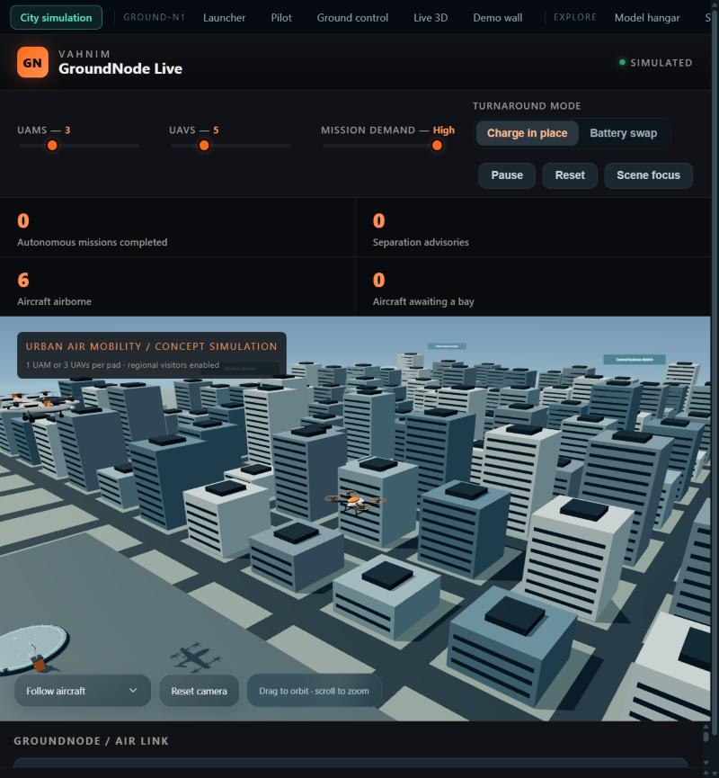
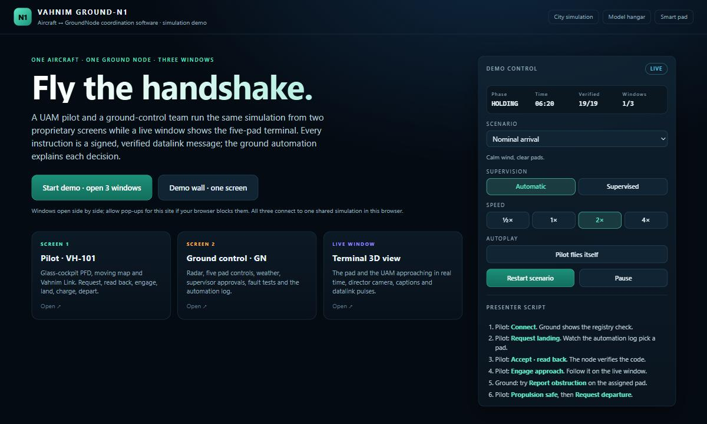
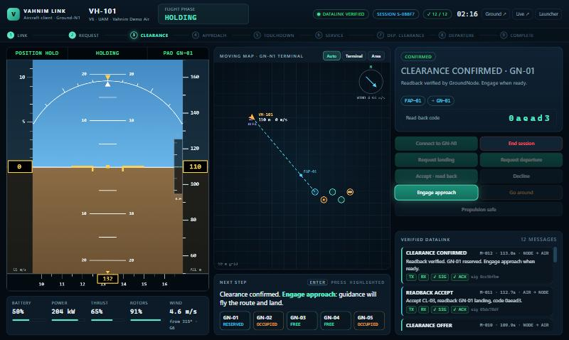
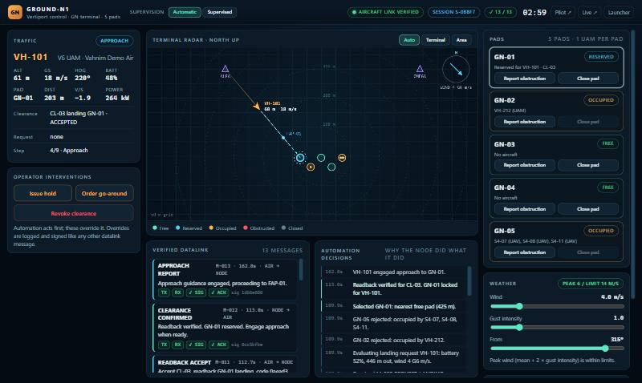
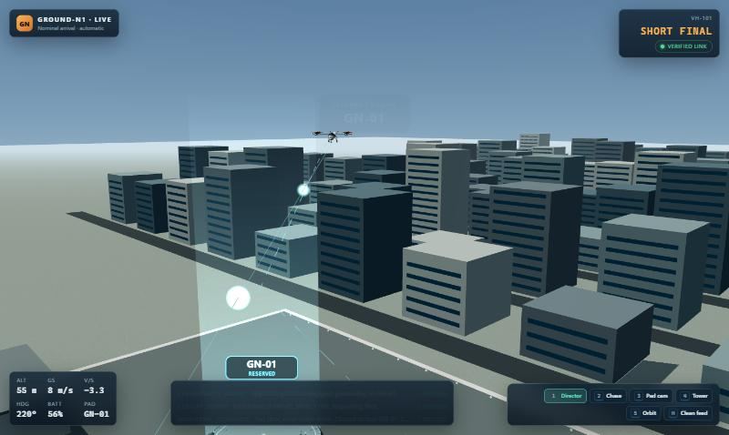

How to run and present the city simulation and the Ground-N1 aircraft-to-ground demo: three windows, one shared simulation, five pads.
The project simulates an urban air mobility terminal with five landing pads (GN-01 to GN-05). It has two parts you can use on their own or together:
npm install once. This downloads the pinned 3D library (three.js).npm start. It serves the project at http://localhost:8123.http://localhost:8123 in Chrome or Edge. The home page is the city simulation.npm test. All suites should print PASS lines (city fleet, protocol, coordination, encounter and Ground-N1).| Page | File | Purpose |
|---|---|---|
| City simulation (home) | index.html | Whole fleet, five pads, city missions |
| Ground-N1 launcher | n1.html | Choose scenario, mode and speed; open the windows |
| Pilot | n1-pilot.html | Aircraft cockpit software |
| Ground control | n1-ground.html | Operations screen for the ground team |
| Live 3D | n1-live.html | 3D view of the terminal and aircraft |
| Demo wall | n1-wall.html | All three screens tiled on one display |
| Explore overview | explore.html | Plain-language menu of the pages below, with a glossary |
| Cockpit encounter | comms.html | Guided practice landing with a coach (private simulation) |
| Aircraft models | hangar.html | Turntable viewer with hover, cruise and parked modes and key facts |
| Smart pad | smart-pad.html | Interactive pad concept |
| Integration lab | coordination-lab.html | Detailed review and failure exercises |
Every page has the same bar across the top. The orange ← Home button (left) returns to the city simulation from any page. The other tabs are grouped as Ground-N1 (Launcher, Pilot, Ground control, Live 3D, Demo wall) and Explore (Overview, Cockpit encounter, Aircraft models, Smart pad, Integration lab). The current page is highlighted. On narrow windows the bar scrolls sideways.
At the right end of the bar, the pulsing ⓘ In simple words button opens a short plain-language explanation of the page you are on. Click Got it to close it; the button stops pulsing once you have used it.

Aircraft depart a pad vertically, climb, fly to a city site, hover still for the mission, then return, wait for a free bay, land, charge (or swap the battery) and redeploy. Each UAM takes a whole pad. Each pad holds up to three UAVs, never mixed with a UAM.
| Control | What it does |
|---|---|
| UAMs slider (0 to 12) | Number of passenger aircraft in the home fleet. Added aircraft enter from outside the city; removed ones retire after they land and finish service. |
| UAVs slider (0 to 20) | Number of drones in the home fleet. |
| Mission demand | How often idle aircraft are dispatched. Higher demand means busier pads and queues. |
| Turnaround mode | Charge in place (longer dwell) or Battery swap (short dwell). |
| Pause / Reset | Freeze the simulation (camera still works) or restart it. |
| Scene focus | Hides the panels so only the 3D scene shows. |
| Camera menu | Orbit / overview, City overview, Follow aircraft (tracks the selected aircraft), Pad approach (close on the selected pad). Drag to orbit, scroll to zoom, Reset camera to go home. |
| Flight board | Click an aircraft to select it and see mission, battery, altitude and traffic status. |
| Communications filter | Show all channels, missions, separation advisories, city handoffs, arrivals, departures, service, or only the selected aircraft or pad. |

The panel shows the aircraft phase, simulated time, verified message count and how many windows are connected. Restart scenario resets everything; Pause freezes flight and timers; Autoplay lets the pilot press every recommended step by itself.
| Window | Who | Main elements |
|---|---|---|
| Pilot | UAM pilot | Flight display (attitude, speed, altitude, vertical speed, heading), moving map, mission progress bar, clearance card with read-back code, action buttons, verified datalink log. |
| Ground control | Ground team | Terminal radar, traffic strip, five pad cards with controls, weather sliders, supervision toggle, approval card, intervention and test buttons, datalink log, automation decision log. |
| Live 3D | Everyone | The five-pad terminal and the aircraft. Director camera, captions for key events, telemetry, message ticker. |

| Button | Use |
|---|---|
| Connect to GN-N1 | Open a verified session; the node checks the aircraft against its registry. |
| Request landing / Request departure | Ask the ground node. It answers automatically. |
| Accept · read back / Decline | Answer a clearance offer. Accepting sends the code back for the node to verify. Offers expire after 30 s. |
| Engage approach / Engage departure | Starts the guidance. Accepting alone never moves the aircraft. |
| Go around | Abort the approach: climb and hold. |
| Propulsion safe | After landing and rotor stop; starts ground power and charging. |
| End session | Closes the datalink session. |
Keyboard: Enter presses the highlighted next step, G commands a go-around. The map has Auto / Terminal / Area range buttons.

| Element | Use |
|---|---|
| Supervision (top) | Automatic: the node offers clearances at once. Supervised: each recommendation waits for an operator. |
| Approval card | Appears in Supervised mode. Approve the recommended pad, pick another free pad, or Deny to hold. |
| Pad cards | Report obstruction (debris on a pad) and Close pad (maintenance). Both remove the pad from use; an active approach to it is revoked and diverted. |
| Weather | Wind speed, gust intensity and direction. When the peak wind passes the limit (14 m/s) requests are held. |
| Interventions | Issue hold, order go-around, revoke clearance. They override automation and are logged. |
| Verification tests | Send forged message, replay last message, drop the datalink for 10 s. |
| Automation decisions | Plain-language reasons: why a pad was chosen or rejected, holds and diverts. |

Pad rings and labels follow status: green free, cyan reserved, amber occupied, red obstructed, grey closed. Cameras: 1 Director (automatic shots), 2 Chase, 3 Pad cam, 4 Tower, 5 Orbit (drag and scroll), 6 Cockpit seat (first-person from the windshield). H hides the panels and the top bar for a clean feed, F toggles fullscreen.
Use the Nominal arrival scenario at 1×. A full run takes about two and a half minutes. Progress shows in the bar under the pilot header.
| # | Who | Action | What happens |
|---|---|---|---|
| 1 | Pilot | Connect | Signed HELLO; the node verifies the identity and replies with the session. |
| 2 | Pilot | Request landing | The automation checks all five pads, wind and battery. Occupied pads are rejected with the reason; it picks the nearest free pad. |
| 3 | Pilot | Accept · read back | The read-back code is verified; the pad is locked and shows as reserved. |
| 4 | Pilot | Engage approach | The aircraft flies the route, aligns over the pad and descends. Watch the live window. |
| 5 | Automatic | Touchdown | The touchdown report and sink rate are verified. Rotors spool down. |
| 6 | Pilot | Propulsion safe | Charging starts (time-compressed for the demo). |
| 7 | Pilot | Request departure | Offered once battery and weather allow; accept, then Engage departure. |
| 8 | Automatic | Climb-out | The pad is released when the aircraft is clear; the session closes. |
Each datalink entry shows kind, time, direction and text, plus chips: TX sent, RX delivered, ✓ SIG signature verified, ✓ ACK acknowledged. A rejected message is red with the reason.
| Scenario | What to show |
|---|---|
| Nominal arrival | The full happy path. |
| Gusty wind hold | The request is held for wind. On the ground screen lower the wind slider; the automation reassesses and offers a clearance by itself. |
| Pad incursion drill | Debris appears on the assigned pad on short final: clearance revoked, go-around, divert offer to another pad. |
| Low battery priority | Battery below reserve: the request is flagged priority and skips supervisor approval. |
| Link-loss drill | The datalink drops on approach: the aircraft goes around and holds. When the link returns, Connect again and re-request. |
A menu that explains each page in plain words (what it is, what to try, who it is for) plus a short glossary of terms such as UAM, clearance and go-around.
The easiest way to understand the whole system. It runs its own private simulation, so it never disturbs a Ground-N1 demo running in other windows.
Turntable view of the Vahnim V6 air taxi (UAM) and S4 drone (UAV) with plain-language key facts. Choose Hover (rotors lifting), Cruise (the air taxi's wing carries it and its lift rotors stop; the drone tilts forward) or Parked. Drag to look around; scroll to zoom.
Interactive 3D pad concept. Click a part or the system list to highlight it; use Top view, Reset, auto-rotate and the exploded view.
Detailed exercise for equipped and visitor aircraft with operator review and failure cases (expiry, conflicts, link loss). It can also mirror city telemetry from another tab.
| Problem | Fix |
|---|---|
| Page will not load | Check npm start is running and use http://localhost:8123. |
| Windows do not open | Allow pop-ups for the site, or open the pages from the tabs, or use the Demo wall. |
| Screens show different states | Windows must be in the same browser profile. Add ?local=1 to a page only if you want a private, unsynced copy. |
| Everything restarted | Closing every Ground-N1 window ends the shared simulation. Keep at least one open. |
| 3D scene is blank | The browser needs WebGL. Try Chrome or Edge with hardware acceleration on. |
| Buttons are greyed out | Actions only enable when valid. Follow the highlighted step, or read the hint under "Next step". |
Tuning notes for developers (pad positions, limits, scenarios, aircraft specifications, colours) are in the project README under "Tuning cheat-sheet".